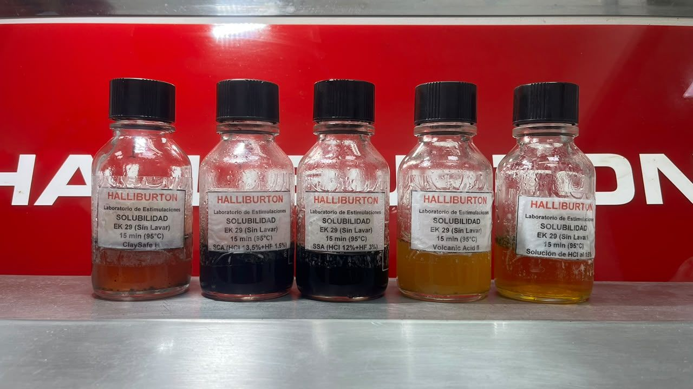
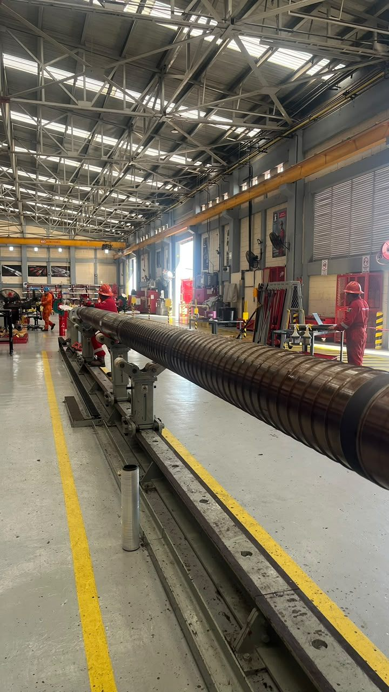
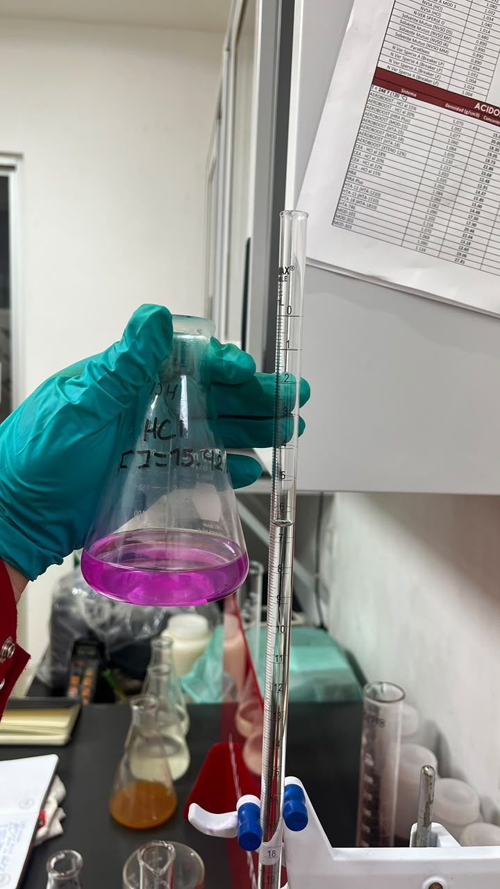
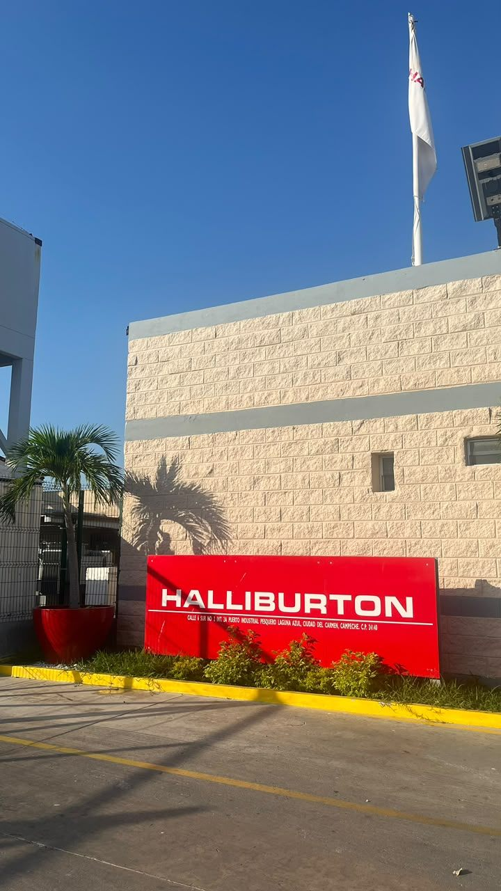

Halliburton
Development Excellence Engineer Program (DEEP)

HCT
Completion Tools
Empacadores recuperables y HPHT, liners, colgadores deformables, sartas de limpieza de pozo, válvulas TRSV y sensores permanentes de P/T.

ALS
Artificial Lift
Pruebas de taller a motores, bombas y secciones de sello BEC/ESP antes de su envío a campo. Instrumentación de fondo y sistemas eléctricos.

PE
Production Enhancement
Control de calidad en laboratorio de estimulación ácida, apuntalantes y surfactantes. Espectrofotometría de crudo y análisis de agua.
ASTM E224API RP 19CISO 13503-2API RP 42
- Desarrollé soluciones internas en Power Apps para digitalizar el inventario de equipos y los flujos de trabajo operativos.
- Impartí Momentos de Seguridad HSE y presentaciones técnicas alineadas con las Prácticas Globales Recomendadas de Halliburton y las normas NOM aplicables.






